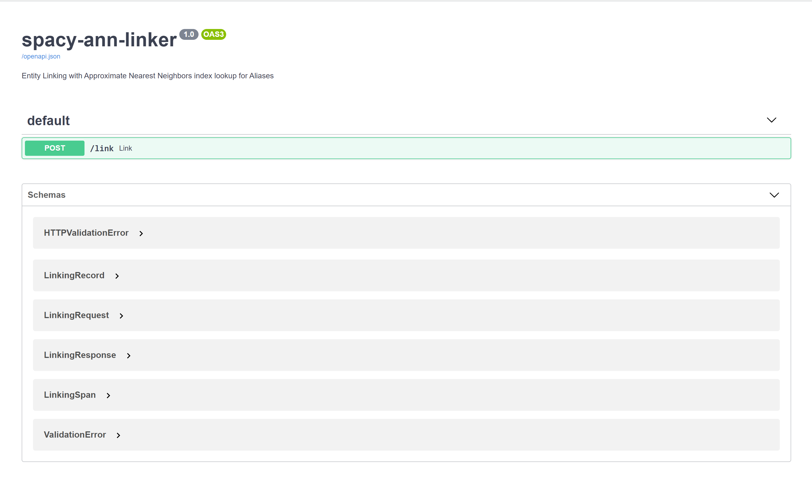

Tutorial - Remote Entity Linking¶
Introduction¶
The original reason for developing this package at Microsoft is we need a way to Link Entities to a KnowledgeBase without having that KnowledgeBase in memory.
This tutorial walks through creating the ANN Index for all the Aliases in a KnowledgeBase remotely and exposing the index through a Web Service using FastAPI.
If you're unfamiliar with FastAPI, you can read more about it here: https://fastapi.tiangolo.com/
The full code for this tutorial is in examples/api
This tutorial assumes you've already run the
create_indexcommand and have a saved model. If you haven't already done that, follow the steps in the Introduction
The actual webservice service implementation is quite short thanks to FastAPI taking away a lot of the normal boilerplate.
Load the model¶
First we need to load our spaCy model from the create_index command.
# Copyright (c) Microsoft Corporation. All rights reserved. # Licensed under the MIT License. import os from dotenv import load_dotenv, find_dotenv from fastapi import FastAPI, Body from starlette.middleware.cors import CORSMiddleware from starlette.responses import RedirectResponse import spacy import uvicorn from models import LinkingRequest, LinkingResponse, LinkingRecord load_dotenv(find_dotenv()) prefix = os.getenv("CLUSTER_ROUTE_PREFIX") if not prefix: prefix = "" prefix = prefix.rstrip("/") app = FastAPI( title="spacy-ann-linker", version="1.0", description="Entity Linking with Approximate Nearest Neighbors index lookup for Aliases", openapi_prefix=prefix, ) example_request = list(srsly.read_json('./example_request.json')) nlp = spacy.load("../tutorial/models/ann_linker") @app.get("/", include_in_schema=False) def docs_redirect(): return RedirectResponse(f"{prefix}/docs") @app.post("/link", response_model=LinkingResponse) async def link(body: LinkingRequest = Body(..., example=example_request)): """Link batch of Spans to their canonical KnowledgeBase Id.""" res = LinkingResponse(documents=[]) for doc in body.documents: spacy_doc = nlp.make_doc(doc.context) spans = [ spacy_doc.char_span(s.start, s.end, label=s.label) for s in doc.spans ] spacy_doc.ents = [s for s in spans if s] spacy_doc = nlp.get_pipe('ann_linker')(spacy_doc) for i, ent in enumerate(spacy_doc.ents): doc.spans[i].id = ent.kb_id_ res.documents.append( LinkingRecord(spans=doc.spans, context=doc.context) ) return res
Define the batch linking route¶
Once we have our basic API configured and our model loaded, we need a route where we can query the index. Let's add the /link route.
# Copyright (c) Microsoft Corporation. All rights reserved. # Licensed under the MIT License. import os from dotenv import load_dotenv, find_dotenv from fastapi import FastAPI, Body from starlette.middleware.cors import CORSMiddleware from starlette.responses import RedirectResponse import spacy import uvicorn from models import LinkingRequest, LinkingResponse, LinkingRecord load_dotenv(find_dotenv()) prefix = os.getenv("CLUSTER_ROUTE_PREFIX") if not prefix: prefix = "" prefix = prefix.rstrip("/") app = FastAPI( title="spacy-ann-linker", version="1.0", description="Entity Linking with Approximate Nearest Neighbors index lookup for Aliases", openapi_prefix=prefix, ) example_request = list(srsly.read_json('./example_request.json')) nlp = spacy.load("../tutorial/models/ann_linker") @app.get("/", include_in_schema=False) def docs_redirect(): return RedirectResponse(f"{prefix}/docs") @app.post("/link", response_model=LinkingResponse) async def link(body: LinkingRequest = Body(..., example=example_request)): """Link batch of Spans to their canonical KnowledgeBase Id.""" res = LinkingResponse(documents=[]) for doc in body.documents: spacy_doc = nlp.make_doc(doc.context) spans = [ spacy_doc.char_span(s.start, s.end, label=s.label) for s in doc.spans ] spacy_doc.ents = [s for s in spans if s] spacy_doc = nlp.get_pipe('ann_linker')(spacy_doc) for i, ent in enumerate(spacy_doc.ents): doc.spans[i].id = ent.kb_id_ res.documents.append( LinkingRecord(spans=doc.spans, context=doc.context) ) return res
Now this might seem a bit complicated if you haven't used FastAPI before. However, it's quite simple once you delve into the models. FastAPI leverages Pydantic for serializing and deserializing JSON requests. So at the route level, you pass a response_model and a definition of what the Post Body should look like based on Pydantic models.
Models¶
Let's hop over to our models.py file to get a look at the models our route expects.
from typing import List from pydantic import BaseModel class LinkingSpan(BaseModel): text: str start: int end: int label: str id: str = None class LinkingRecord(BaseModel): spans: List[LinkingSpan] context: str class LinkingRequest(BaseModel): documents: List[LinkingRecord] class LinkingResponse(BaseModel): documents: List[LinkingRecord]
If you follow the nested structure of these models you can construct the JSON tree request structure that the API expects as well as the definiton of what it will return.
But we've also included an example_request.json file for a real world example.
Example Request¶
{ "documents": [ { "spans": [ { "text": "NLP", "start": 0, "end": 3, "label": "SKILL" }, { "text": "researched", "start": 16, "end": 26, "label": "SKILL" }, { "text": "Machine learning", "start": 37, "end": 53, "label": "SKILL" } ], "context": "NLP is a highly researched subset of Machine learning." } ] }
ann_linker component to be able to identify candidate aliases and disambiguate and alias to a cononical entity id.
Let's hop back over to our main app.py and review our /link route again.
The logic here is we loop through each document in the request body, make the text into a spaCy Doc object, set the doc.ents based on the provided spans and then run the ann_linker pipe on the doc. We then write to the id attribute of each LinkingSpan object the value of the ent.kb_id_ set by the ann_linker pipeline component.
# Copyright (c) Microsoft Corporation. All rights reserved. # Licensed under the MIT License. import os from dotenv import load_dotenv, find_dotenv from fastapi import FastAPI, Body from starlette.middleware.cors import CORSMiddleware from starlette.responses import RedirectResponse import spacy import uvicorn from models import LinkingRequest, LinkingResponse, LinkingRecord load_dotenv(find_dotenv()) prefix = os.getenv("CLUSTER_ROUTE_PREFIX") if not prefix: prefix = "" prefix = prefix.rstrip("/") app = FastAPI( title="spacy-ann-linker", version="1.0", description="Entity Linking with Approximate Nearest Neighbors index lookup for Aliases", openapi_prefix=prefix, ) example_request = list(srsly.read_json('./example_request.json')) nlp = spacy.load("../tutorial/models/ann_linker") @app.get("/", include_in_schema=False) def docs_redirect(): return RedirectResponse(f"{prefix}/docs") @app.post("/link", response_model=LinkingResponse) async def link(body: LinkingRequest = Body(..., example=example_request)): """Link batch of Spans to their canonical KnowledgeBase Id.""" res = LinkingResponse(documents=[]) for doc in body.documents: spacy_doc = nlp.make_doc(doc.context) spans = [ spacy_doc.char_span(s.start, s.end, label=s.label) for s in doc.spans ] spacy_doc.ents = [s for s in spans if s] spacy_doc = nlp.get_pipe('ann_linker')(spacy_doc) for i, ent in enumerate(spacy_doc.ents): doc.spans[i].id = ent.kb_id_ res.documents.append( LinkingRecord(spans=doc.spans, context=doc.context) ) return res
Build and Run¶
Now that we have an understanding of the code for the Web Service, let's run it using uvicorn.
1. Install Requirements¶
$ cd examples/api $ pip install -r requirements.txt ---> 100% Successfully installed requirements
2. Start the Web Service¶
$ uvicorn app:app --port 8080 Started server process [21052] Waiting for application startup. Application startup complete. Uvicorn running on http://127.0.0.1:8080 (Press CTRL+C to quit)
If you open your browser to http://localhost:8080 now you'll be automatically redirected to the /docs route and greeted with the Open API UI for the Web Service

Now if you click on the green highlighted link route, click the button that says "Try it out" and hit Execute, you'll be making a request with the example_request.json data and should get a JSON reponse back that looks like:
{ "documents": [ { "spans": [ { "text": "NLP", "start": 0, "end": 3, "label": "SKILL", "id": "a3" }, { "text": "researched", "start": 16, "end": 26, "label": "SKILL", "id": "a15" }, { "text": "Machine learning", "start": 37, "end": 53, "label": "SKILL", "id": "a1" } ], "context": "NLP is a highly researched subset of Machine learning." } ] }
Call the Web Service¶
Now that we have an understanding of the remote web service, we need an easy way to call this service from a normal spaCy pipeline. The RemoteAnnLinker component handles this interaction.
Load Extraction Model¶
First, load a model capable of extracting the Entities in your KnowledgeBase. This could be a trained NER model or a rule based extraction or a combination of both. For simplicity we'll use the spaCy EntityRuler component and just add a few terms to it that are close to those in our KnowledgeBase.
import spacy if __name__ == "__main__": nlp = spacy.blank("en") aliases = ['machine learning', 'ML', 'NLP', 'researched'] ruler = nlp.create_pipe('entity_ruler', {"overwrite_ents": True}) patterns = [{"label": "SKILL", "pattern": alias} for alias in aliases] ruler.add_patterns(patterns) remote_ann_linker = nlp.create_pipe('remote_ann_linker', { 'base_url': "http://localhost:8080/link" }) nlp.add_pipe(remote_ann_linker) doc = nlp("NLP is a highly researched area of machine learning") print([(e.text, e.label_, e.kb_id_) for e in doc.ents]) # Outputs: # [('NLP', 'SKILL', 'a3'), ('Machine learning', 'SKILL', 'a1')] # # In our entities.jsonl file # a3 => Natural Language Processing # a1 => Machine learnin
Create a remote_ann_linker pipe¶
Now create a remote_ann_linker pipe using nlp.create_pipe and set the base_url config value to the batch linking url of your web service. If you're still running the service locally from the last step this should be http://localhost:8080/link
import spacy if __name__ == "__main__": nlp = spacy.blank("en") aliases = ['machine learning', 'ML', 'NLP', 'researched'] ruler = nlp.create_pipe('entity_ruler', {"overwrite_ents": True}) patterns = [{"label": "SKILL", "pattern": alias} for alias in aliases] ruler.add_patterns(patterns) remote_ann_linker = nlp.create_pipe('remote_ann_linker', { 'base_url': "http://localhost:8080/link" }) nlp.add_pipe(remote_ann_linker) doc = nlp("NLP is a highly researched area of machine learning") print([(e.text, e.label_, e.kb_id_) for e in doc.ents]) # Outputs: # [('NLP', 'SKILL', 'a3'), ('Machine learning', 'SKILL', 'a1')] # # In our entities.jsonl file # a3 => Natural Language Processing # a1 => Machine learnin
Run the pipeline¶
Now you can call the pipeline the exact same way as you did in when using the local ann_linker component and you should get the exact same results.
import spacy if __name__ == "__main__": nlp = spacy.blank("en") aliases = ['machine learning', 'ML', 'NLP', 'researched'] ruler = nlp.create_pipe('entity_ruler', {"overwrite_ents": True}) patterns = [{"label": "SKILL", "pattern": alias} for alias in aliases] ruler.add_patterns(patterns) remote_ann_linker = nlp.create_pipe('remote_ann_linker', { 'base_url': "http://localhost:8080/link" }) nlp.add_pipe(remote_ann_linker) doc = nlp("NLP is a highly researched area of machine learning") print([(e.text, e.label_, e.kb_id_) for e in doc.ents]) # Outputs: # [('NLP', 'SKILL', 'a3'), ('Machine learning', 'SKILL', 'a1')] # # In our entities.jsonl file # a3 => Natural Language Processing # a1 => Machine learnin
Conclusion¶
This Web Service is quite simple for the tutorial. It skips over things like a health check url, Docker/Kubernetes based deployment, etc. It's merely meant as a quick guide to illustrate the problem this package was originally designed to solve.